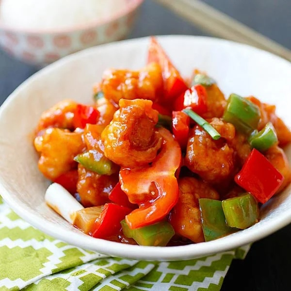

Sweet and Sour Chicken
Home

Description
This sweet and sour chicken recipe makes crispy fried chicken pieces, with pineapple and bell pepper, served with a homemade tangy and sweet sauce.
Ingredients
- Water
- Canned Pineapple
- Sugar
- White Vinegar
- Cornstarch
- Flour
- One Egg
- Eight Boneless, Skinless Chicken Breasts, cut into 1" cubes
- Green Bell Pepper, cut into 1" pieces
Method
- Boil 1.5 cups of water with pineapple juice, sugar and vinegar.
- Make a cornstarch slurry, then mix it into the sauce, until thickened.
- Make the batter, then stir in the the checken pieces to coat.
- Fry the chicken.
- Layer the peppers, pineapple, and chicken on a platter.
- Pour the sauce over the chicken and veg